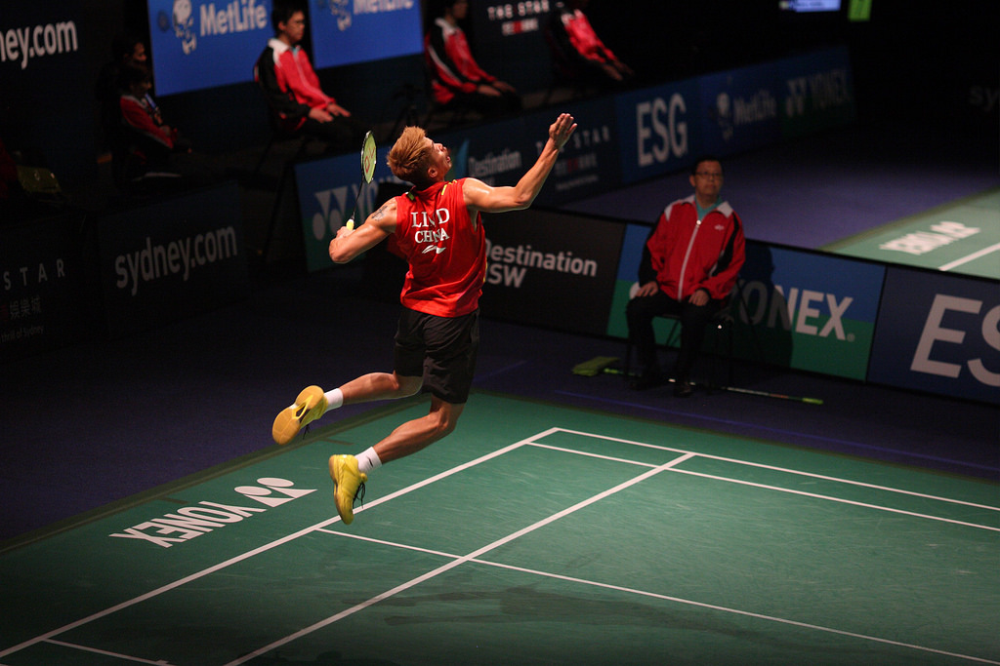
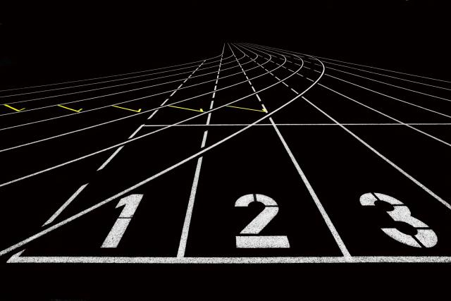
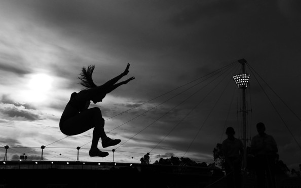
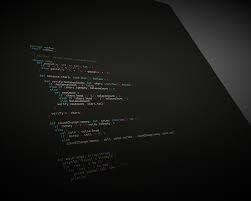

Badminton is a fun sport. Badminton is a racquet sport played using racquets to hit a shuttlecock across a net. Although it may be played with larger teams, the most common forms of the game are "singles" (with one player per side) and "doubles" (with two players per side).
Track and field is a sport which includes athletic contests established on the skills of running, jumping, and throwing.The name is derived from the sport's typical venue: a stadium with an oval running track enclosing a grass field where the throwing and jumping events take place. It is one of the oldest sports. In ancient times, it was an event held in conjunction with festivals and sports meets such as the Ancient Olympic Games in Greece. The running events, which include sprints, middle and long-distance events, race walking and hurdling, are won by the athlete with the fastest time.
 Races over short distances, or sprints, are among the oldest running competitions. The first 13 editions of the Ancient Olympic Games featured only one event, the stadion race, which was a race from one end of the stadium to the other.Sprinting events are focused around athletes reaching and sustaining their quickest possible running speed. Three sprinting events are currently held at the Olympics and outdoor World Championships: the 100 metres, 200 metres, and 400 metres. These events have their roots in races of imperial measurements that later changed to metric
Computer science is the scientific and practical approach to computation and its applications. It is the systematic study of the feasibility, structure, expression, and mechanization of the methodical procedures (or algorithms) that underlie the acquisition, representation, processing, storage, communication of, and access to information. An alternate, more succinct definition of computer science is the study of automating algorithmic processes that scale. A computer scientist specializes in the theory of computation and the design of computational systems.
